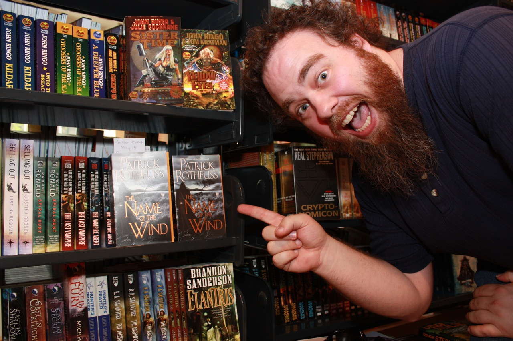

🧙Patrick RothfussMadison, Wisconsin, EUA
Patrick Rothfuss
Autor · Professor · Contador de HistóriasPatrick James Rothfuss nasceu em 6 de junho de 1973 em Madison, Wisconsin. Cresceu numa família comum do Meio-Oeste americano, mas desde cedo desenvolveu uma paixão avassaladora por livros, jogos de RPG e as histórias que constroem mundos inteiros a partir do nada.
Estudou engenharia química na Universidade de Wisconsin-Stevens Point — não por vocação, mas porque não tinha certeza do que queria fazer. O que sabia era que queria escrever. Durante anos conciliou os estudos com o trabalho no que viria a ser a Crônica do Matador do Rei, um romance que levou mais de uma década para tomar a forma que o tornaria famoso.
Depois de se formar, tornou-se professor de escrita criativa na mesma universidade, cargos que ocupou com entusiasmo genuíno. Enquanto dava aulas, seguia aprimorando o manuscrito que havia começado ainda como estudante.
Em 2007, O Nome do Vento foi publicado pela DAW Books e se tornou imediatamente um fenômeno. A crítica especializada e os leitores reagiram com um entusiasmo raro — muitos o chamaram de o melhor primeiro romance de fantasia em décadas. Em 2011, o segundo volume, O Temor do Sábio, confirmou que não se tratava de sorte de estreante, mas de um talento genuíno e duradouro.